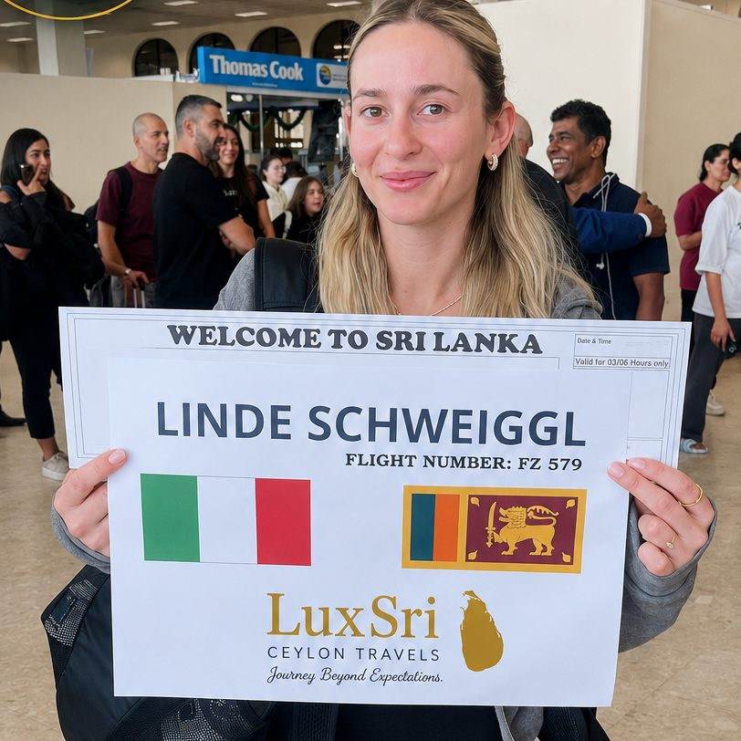
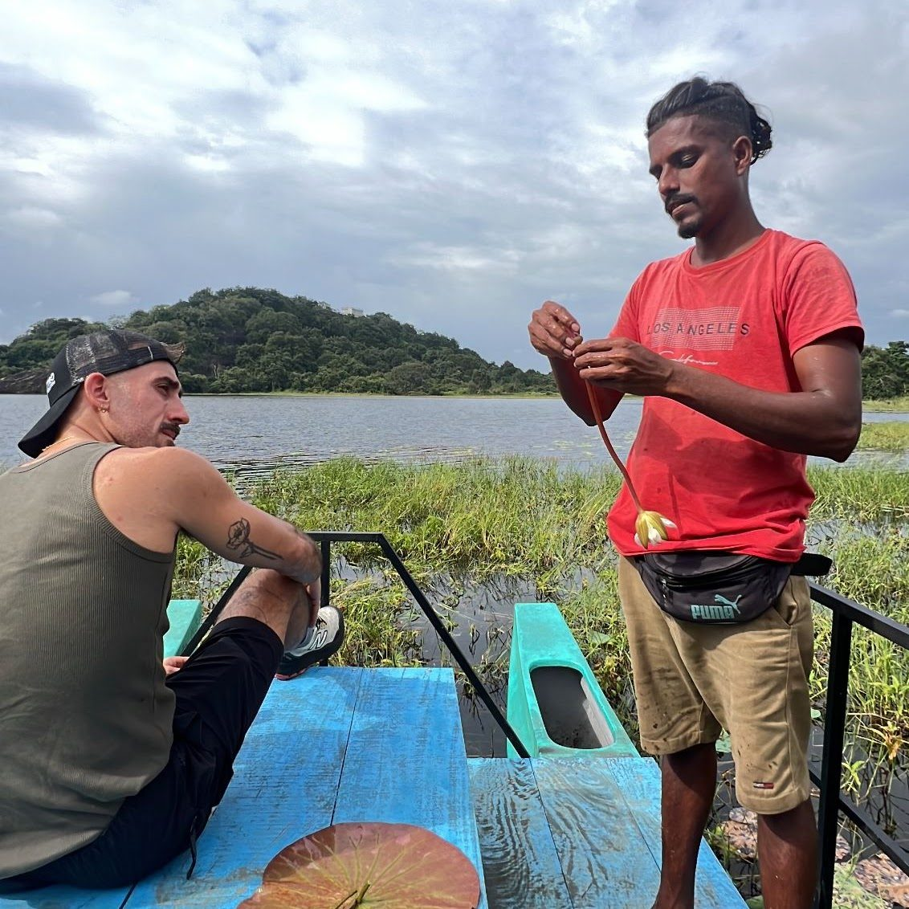

Your private chauffeur guide in Sri Lanka
Travel Sri Lanka at your own pace with Mahesh Thilakasiri, founder of LuxSri Ceylon Travels and a professional English-speaking driver. No shared buses, no fixed group schedules. Just you, a comfortable air-conditioned vehicle and a local guide.
- English-speaking chauffeurMahesh drives and guides you himself
- Private A/C vehicleNo shared buses or fixed schedules
- Airport pickupMet at Colombo airport (CMB)
- Free tailor-made planItinerary and quote on WhatsApp
Everything you need for an easy trip
- A personalised itinerary built around your dates, interests and pace
- An English-speaking private chauffeur guide for the whole trip
- A comfortable air-conditioned vehicle
- Airport pickup and drop-off at Colombo Bandaranaike International Airport (CMB)
- Local tips on food, culture and lesser-known places
- Freedom to stop for photos, roadside stalls and village temples

Anywhere on the island
These are the places guests ask for most. Mahesh will happily take you beyond them.

See more, wait less
Many of Sri Lanka's best places are hard to reach by public transport. With your own driver you can stop for photos, roadside fruit stalls and village temples, start early at Sigiriya to beat the crowds, and change plans on the way when something catches your eye.
It's the relaxed way to travel for couples, families and small groups of friends.
Three simple steps
Message Mahesh
Send your travel dates, group size and the places you'd like to see on WhatsApp.
Get your plan
Receive a free personalised itinerary and quote, then adjust it until it feels right.
Arrive and relax
Confirm, and Mahesh meets you at the airport with a name sign. The rest is your journey.
Questions travellers ask
Who will be driving us?
Mahesh Thilakasiri, the founder of LuxSri Ceylon Travels, is your English-speaking private chauffeur guide for the whole trip.
Do you pick up from the airport?
Yes. Airport pickup and drop-off at Colombo Bandaranaike International Airport (CMB) is included, and private transfers can go anywhere in Sri Lanka.
Can we change the sample itineraries?
Yes. Every tour is planned around you. The sample routes can be shortened, extended or combined, and plans can change along the way.
How much does a tour cost?
It depends on your dates, route and group size. Send your details on WhatsApp and Mahesh will reply with a free personalised itinerary and quote.
Who are your tours for?
Couples, families and small groups of friends who want to travel at their own pace in a private air-conditioned vehicle.
Book your Sri Lanka driver
Tell us a little about your trip and send it by email or WhatsApp. Mahesh replies personally with a free plan and quote.
- WhatsApp or call+94 77 522 8576
- Instagram@luxsri_ceylon_travels
- TikTok@maheshthilakasiri